Scientific illustrator
Covers
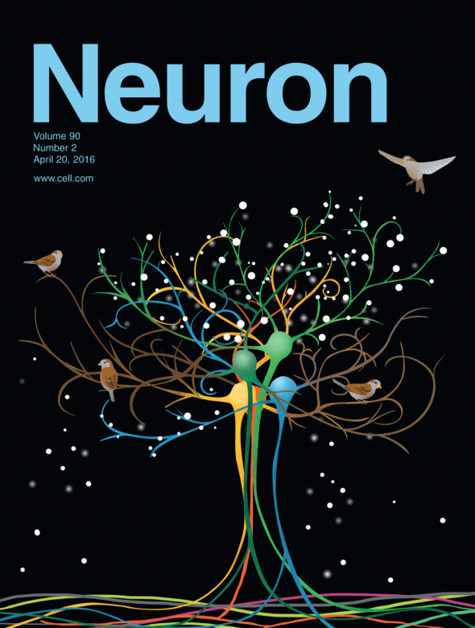
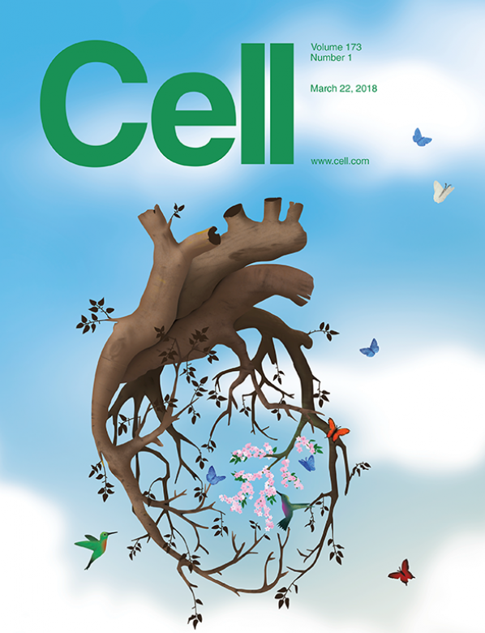
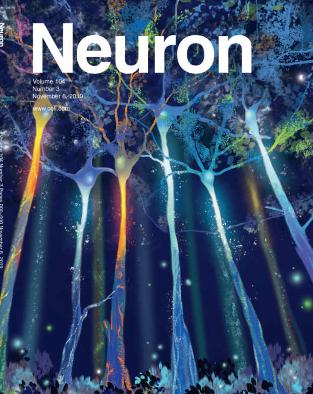
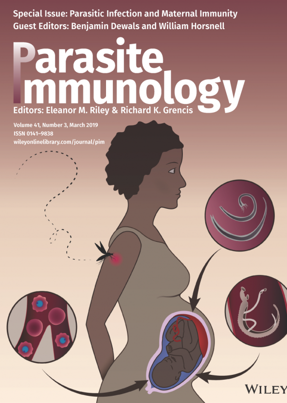
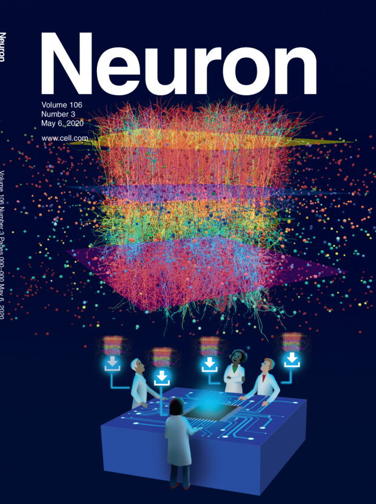
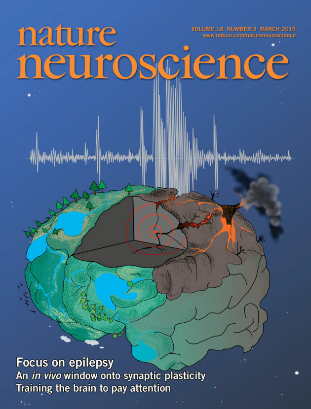
Figures
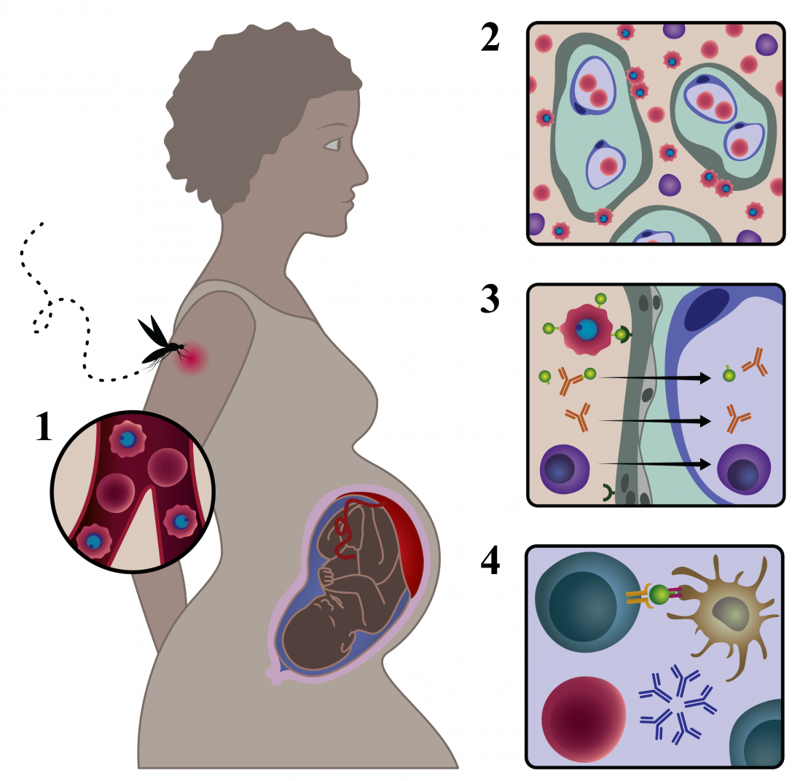
Figure for a review on malaria and pregnancy
Malaria in pregnancy shapes the development of foetal and infant immunity, Parasite Immunol. 2019 Mar;41(3):e12573
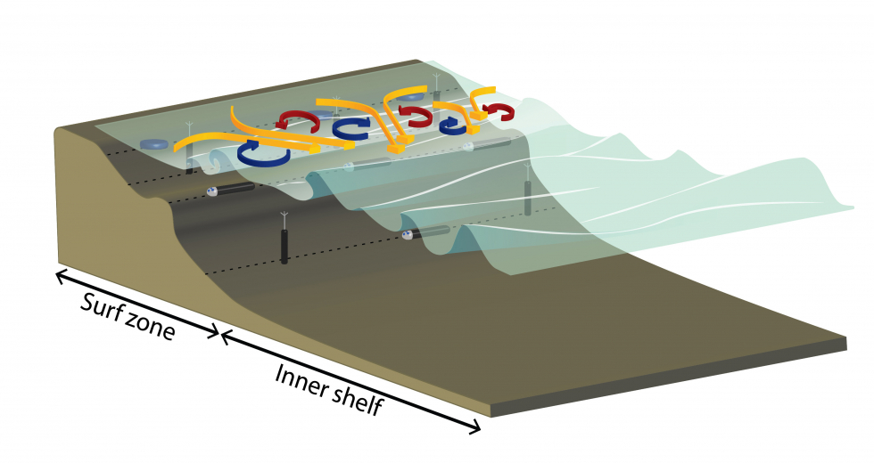
Figures for the Department of Civil and Environmental Engineering, University of Washington
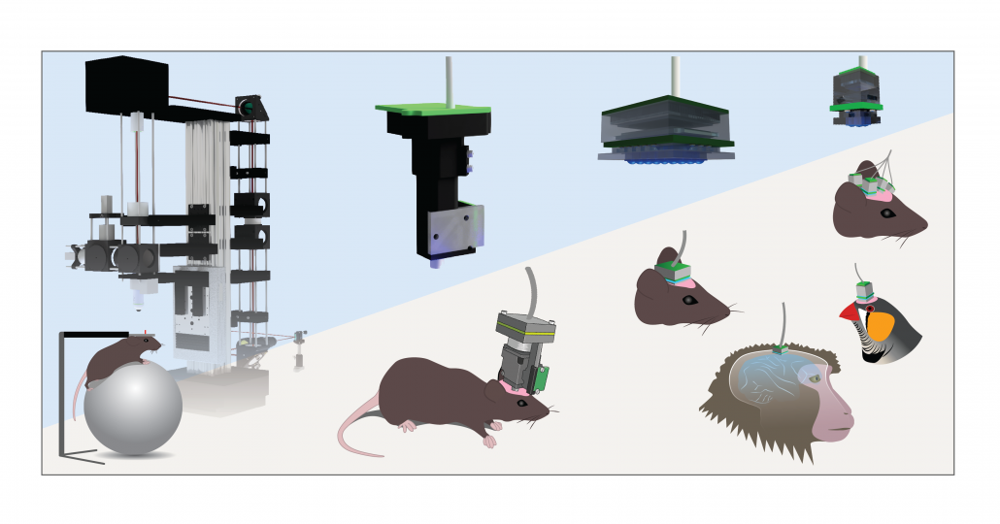
Figures for the Institute of Neuroscience, ETH Zurich
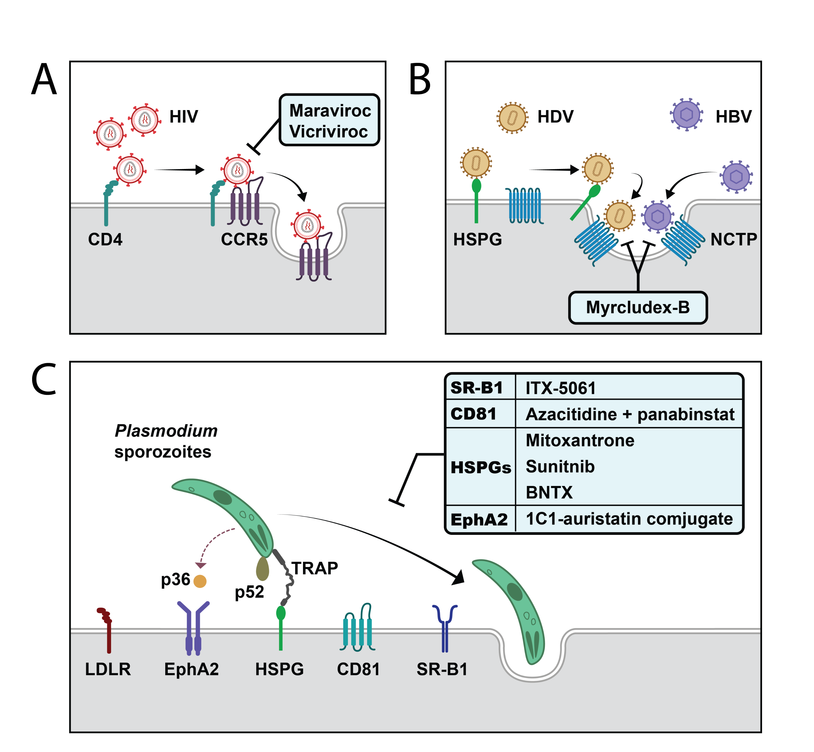
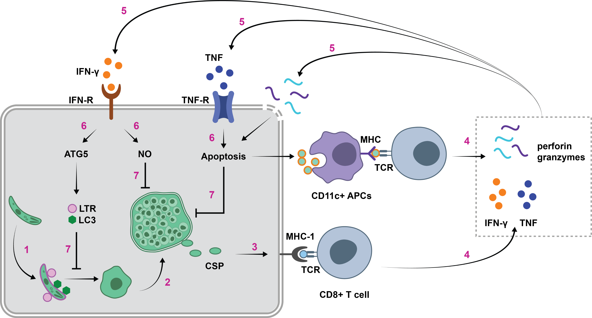
Figure for Seattle Children's
These figures describe current drug research against malaria.
LOGOS
Logos for the Department of Civil and Environmental Engineering
Book Illustrations
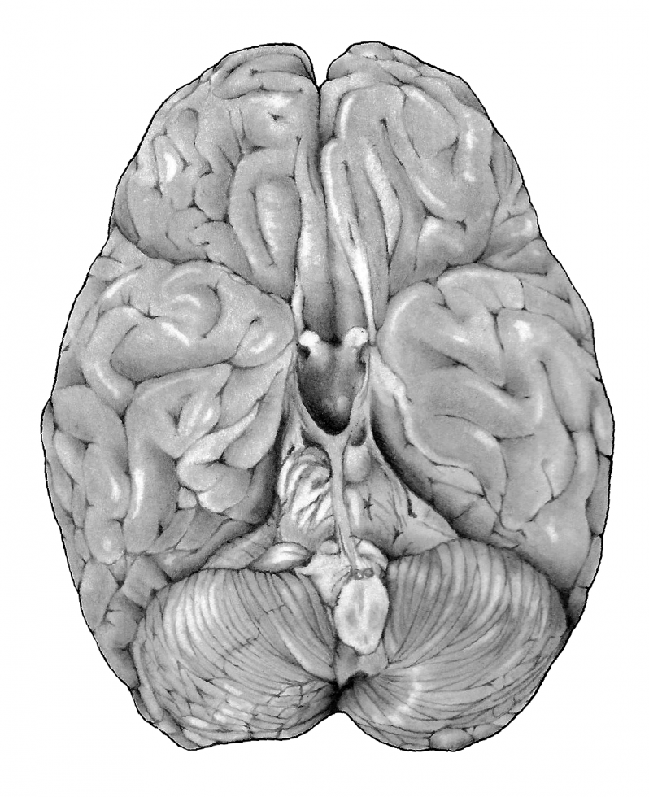
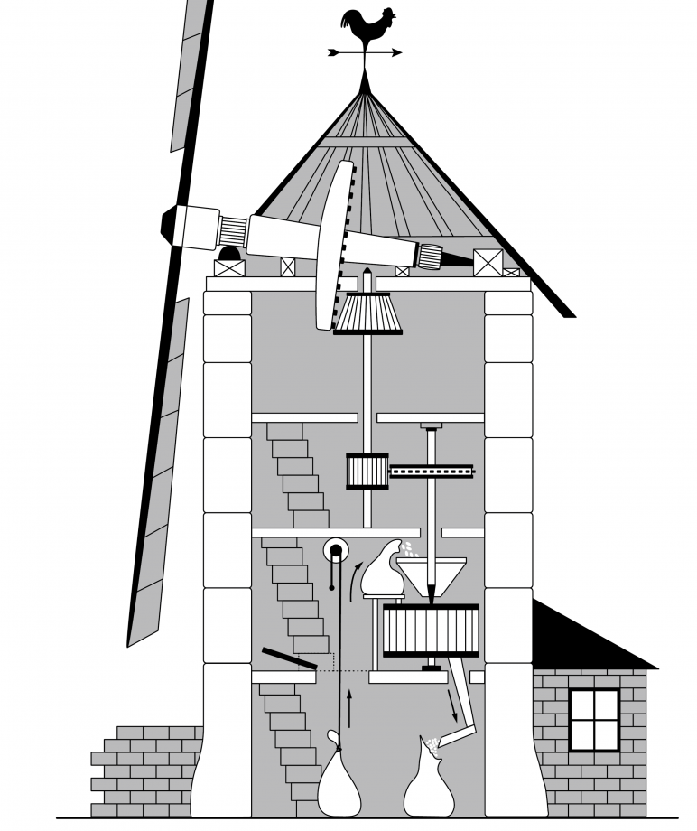
Selected illustrations for The Feeling of Life Itself, by Christof Koch, Chief Scientist at the Allen Institute